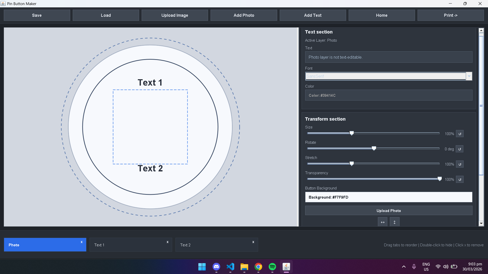

Editor Controls

The real workspace uses a dark utility bar that keeps editing, upload, and print actions visible at a glance.
Premium visual publishing for modern teams
PinCraft brings your visual workflow into one polished space so creators, marketers, and product teams can move from idea to launch with sharper assets, clearer collaboration, and less clutter.
Built for creative teams who want studio-grade polish without the noise.
Editor Controls

The real workspace uses a dark utility bar that keeps editing, upload, and print actions visible at a glance.
Print Layout
The print screen arranges the layout based on the selected button size, and users can choose either A4 or Letter paper before export.
Layer Tabs
Features
The website combines structured product presentation with a user-friendly layout, helping visitors understand the system, preview its interface, and move naturally toward installation.
Website Features
Minimal, organized, and built for clear product discovery.A spacious structure adapts smoothly across desktop and mobile while keeping the presentation elegant and readable.
Dedicated content blocks highlight what the platform offers with strong hierarchy and an easy-to-scan layout.
Product mockups and interface-inspired visuals give users a clear look at the system before downloading it.
Focused CTA placement supports a direct path from browsing to application download without unnecessary friction.
Organized content sections and a clean navigation bar help users move through the page with confidence.
Consistency, visual hierarchy, and clarity shape the entire interface for a more intuitive browsing experience.
Preview
This dedicated screenshot area presents the system in a premium, product-focused way so users can understand the flow of customization, preview, and organization before downloading.
Main Preview
Active Layer: Photo
Text Photo layer is not text-editable. Font SansSerif Color Color: #39414CCustomization
Fits 6 pins at 2.25" + 1 cm size + 1 cm bleed.
Print Settings
A4 Preview | 2.25" + 1 cm | 6 pins
Paper Preview
Download
Discover the platform through its premium preview experience, then move directly into the application with a focused download flow designed to feel simple, clear, and ready for action.
Preview the system, understand the workflow, and install when you're ready.
About PinCraft
PinCraft is a web-based promotional platform developed using HTML and CSS that showcases a button pin customization system. It serves as an advertisement page where users can explore the system's features, view interface previews, and understand how the platform works before downloading the application.
The experience is intentionally clean and organized, using structured sections, visual mockups, and focused content blocks to guide attention naturally. The layout is designed to feel modern and approachable while still presenting the product with a refined, premium tone.
Through this website, users are introduced to PinCraft's core capabilities, including design customization, real-time preview, and project management, making it an effective preview and download platform for new users.
Members
This section highlights the project members through a clean, professional layout that keeps profiles readable, consistent, and visually aligned with the rest of the landing page.
Member 1
Frontend Developer and UI Designer
Focuses on shaping the visual direction, refining layout decisions, and ensuring the PinCraft experience feels modern, polished, and user-centered.
Member 2
Project Coordinator
Supports planning, documentation, and collaboration to keep the team organized and the project direction clear.
Member 3
System Analyst
Helps define system structure, feature flow, and usability goals so the platform stays consistent and understandable.
Member 4
Content and Research Lead
Shapes supporting copy, research references, and content clarity to strengthen the academic and promotional narrative.
Member 5
Quality and Presentation Reviewer
Reviews visual consistency, structure, and final presentation quality to keep the overall output clean and professional.